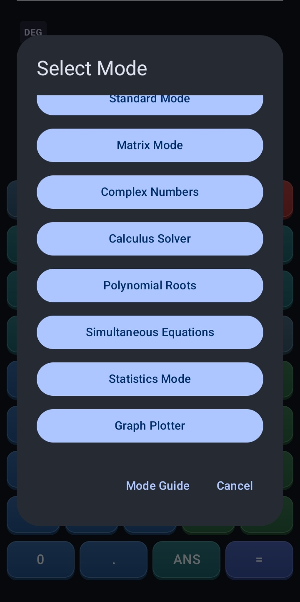
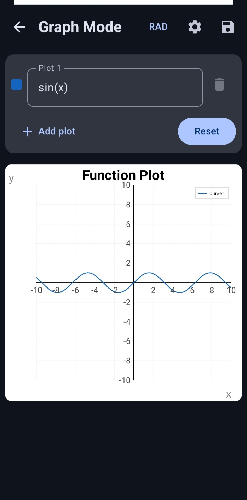
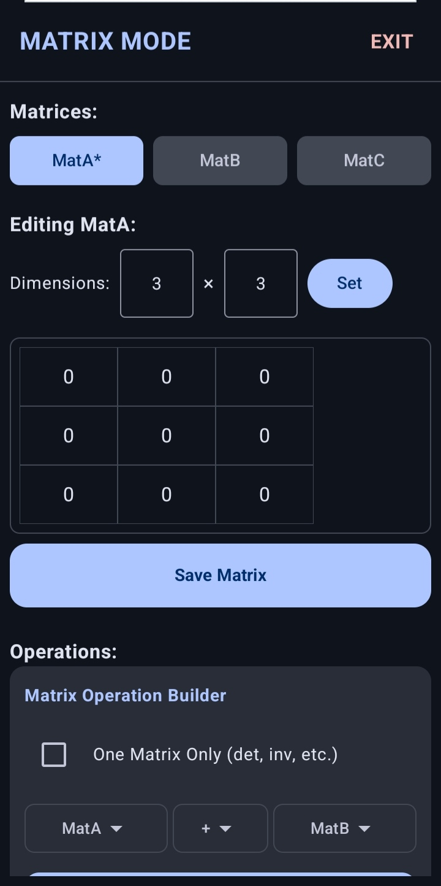
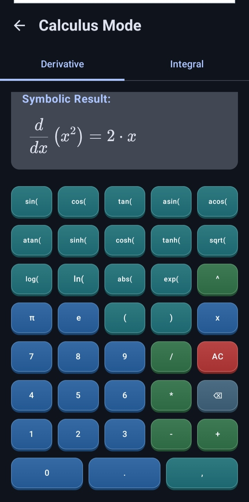
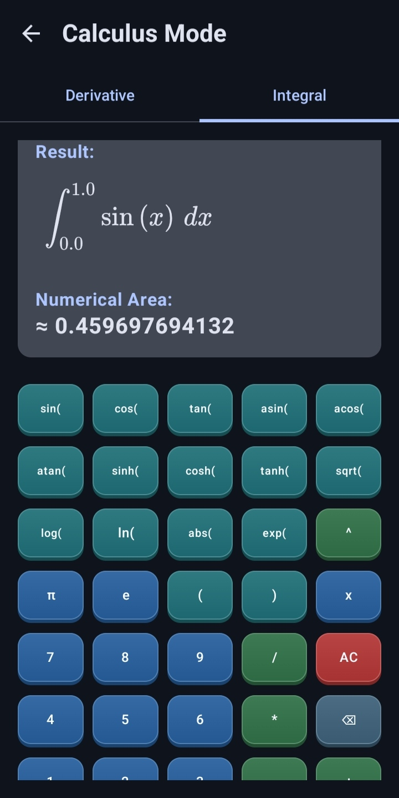
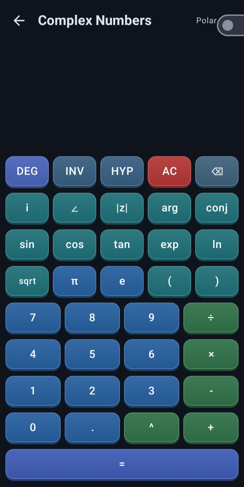
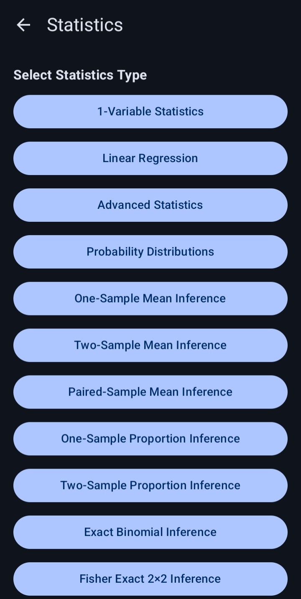

About
Scientific Calculator is a powerful calculator designed for students, teachers, engineers and professionals.
It combines standard and scientific calculations, matrix operations, statistical analysis, complex-number calculations, calculus tools, polynomial root solving, simultaneous-equation solving and advanced multi-plot graphing in a clean and intuitive interface.
App Screenshots
Explore the main calculator modes and tools available in the app. Select any screenshot to view the full-size image.







Calculator Modes
Standard Mode
Perform arithmetic and scientific calculations with functions, constants, memory controls and editable mathematical expressions.Matrix Mode
Create, store and calculate with matrices from 1×1 up to 5×5.Statistics Mode
Analyse data with one-variable statistics, linear regression, advanced tools, probability distributions and one-sample mean inference.Complex Numbers
Calculate with complex numbers in rectangular and polar forms.Calculus Solver
Calculate symbolic and numerical derivatives together with supported indefinite and definite integrals.Polynomial Roots
Solve real-coefficient polynomial equations from degree 1 through degree 5.Simultaneous Equations
Solve supported 2×2 and 3×3 systems of real linear equations.Graph Plotter
Plot up to four supported explicit or implicit equations with custom curve names, colours, zooming, panning, legends and image export.Standard Calculator Features
Basic Arithmetic
Perform addition, subtraction, multiplication and division using standard operator-precedence rules.Parentheses
Use parentheses to group calculations and control the order of operations.Implicit Multiplication
Enter supported expressions such as 2(3+4) without manually inserting every multiplication symbol.Percentage Calculations
Use the postfix percentage operator for calculations such as 50% and 200×10%.Trigonometric Functions
Calculate sine, cosine and tangent together with their inverse and hyperbolic forms.DEG & RAD Modes
Switch between degree and radian angle units for trigonometric calculations.INV & HYP Controls
Use the INV and HYP controls to change the available trigonometric and logarithmic function mappings.Logarithms & Exponentials
Calculate common logarithms, natural logarithms and exponential expressions.Powers & Roots
Calculate general powers, square roots and cube roots.Scientific Notation
Enter large or small numerical values using E notation, such as 1E3.Mathematical Constants
Use π and Euler’s constant e directly in expressions.Factorials
Calculate supported factorial expressions with domain and overflow checks.Permutations & Combinations
Calculate supported nPr and nCr expressions.Memory Controls
Store and reuse a numerical value with M+, M−, MR and MC.ANS Value
Insert the last successful exact result into a new expression using ANS.Answer Continuation
After a successful calculation, continue directly with supported binary operators using the exact previous answer.Editable Expressions
Move the input cursor within an expression to correct or extend it without re-entering the entire calculation.Matrix Features
Matrix Memories
Create and reuse matrices stored as MatA, MatB and MatC.Matrix Sizes
Create matrices ranging from 1×1 through 5×5.Matrix Addition
Add matrices with compatible dimensions.Matrix Subtraction
Subtract matrices with compatible dimensions.Matrix Multiplication
Multiply matrices when their dimensions satisfy the required compatibility rules.Scalar Operations
Multiply or divide a matrix by supported scalar values.Matrix Powers
Calculate supported integer matrix powers from −20 through 20.Determinant
Calculate the determinant of a supported square matrix.Matrix Inverse
Calculate the inverse of a supported non-singular square matrix.Transpose
Interchange the rows and columns of a matrix.Rank
Determine the rank of a matrix.Trace
Calculate the trace of a supported square matrix.Adjoint
Calculate the adjoint of a supported matrix.Cofactor
Calculate supported matrix cofactors.Minor
Calculate supported matrix minors.Typed Matrix Expressions
Enter expressions using MatA, MatB, MatC, parentheses and supported matrix operators.Statistics Features
One-Variable Statistics
Analyse numerical data with count, sum, mean, median, minimum, maximum, range, variance and standard-deviation results.Frequency-Weighted Data
Enter values with frequencies so repeated observations can be analysed without manually entering the same value many times.Linear Regression
Calculate supported linear-regression results, correlation information and predicted values from paired X and Y data.Advanced Statistics
Use the dedicated Advanced section for additional supported descriptive and data-analysis results.Probability Distributions
Access the dedicated Distributions section for supported probability and distribution calculations.One-Sample Mean Inference
Perform Student's t inference for a population mean when the population standard deviation is unknown.Confidence Intervals
Calculate supported confidence intervals and bounds for the population mean.Hypothesis Testing
Run two-sided, left-tailed or right-tailed one-sample mean tests and view the test statistic, p-value and decision.Independent Data Screens
Each statistics tool keeps its own inputs and results, with clear validation, reset controls and readable summaries.Complex Number Features
Rectangular Form
Enter and calculate complex numbers in the form a+bi.Polar Form
Enter and display complex numbers in the form r∠θ.Magnitude
Calculate the absolute value or magnitude of a complex number.Argument
Calculate the argument of a complex number in degrees or radians.Complex Conjugate
Calculate the conjugate of a complex number.Complex Functions
Use supported complex exponential, logarithm, square-root, sine and cosine functions.Complex Powers
Calculate supported complex powers with consistent principal-branch output where applicable.Polar Result Display
Switch the result between rectangular and polar presentation without changing its mathematical value.Calculus Features
Symbolic Derivatives
Generate rule-based symbolic derivative expressions for supported functions.Numerical Derivatives
Evaluate derivatives at a specified point using the symbolic result and an adaptive numerical fallback when required.Symbolic Integration
Integrate supported polynomials, sums, differences, linear substitutions and selected substitution or integration-by-parts patterns.Definite Integration
Evaluate supported definite integrals using adaptive numerical quadrature.Singularity Handling
Detect and reject unresolved singular, non-convergent or excessively oscillatory numerical integration requests.Clear Unsupported Results
Display an explicit message when an indefinite integral is non-elementary or not supported by the solver.Formatted Mathematics
Display supported derivative and integral results using formatted mathematical notation.Scrollable Results
Horizontally scroll long formatted mathematical results when they exceed the available display width.Equation Solver Features
Polynomial Degrees 1–5
Solve real-coefficient polynomial equations from linear through fifth degree.Expression-Based Coefficients
Use supported coefficient expressions containing arithmetic, parentheses, powers, square roots, π and e.Real & Complex Roots
Display both real and complex polynomial roots when applicable.Exact & Approximate Results
Distinguish exact roots from numerically determined or irrational-expression roots.Two-Variable Systems
Solve supported 2×2 real linear systems in X and Y.Three-Variable Systems
Solve supported 3×3 real linear systems in X, Y and Z.System Classification
Distinguish between a unique solution, no solution and infinitely many solutions.Scientific-Notation Inputs
Enter signed decimal or scientific-notation coefficients and constants in the simultaneous-equation solver.Graph Plotter Features
Up to Four Plots
Plot up to four active mathematical expressions together on the same graph.Explicit & Implicit Equations
Plot supported explicit functions such as y=sin(x) and supported implicit equations such as x²+y²=4.DEG & RAD Evaluation
Control whether trigonometric graph expressions are evaluated in degrees or radians.Adaptive Sampling
Use adaptive graph sampling to preserve steep continuous curves and separate branches around detected asymptotes.Zoom & Pan
Use supported touch gestures to zoom and move around the graph while preserving equal X and Y scaling.Reset View
Restore the graph viewport to the applied logical bounds.Custom Bounds
Set minimum and maximum values for the X and Y axes.Graph Metadata
Add a graph title together with custom X-axis and Y-axis labels.Curve Names & Colours
Assign editable names to active curves and distinguish plots using stable individual colours.Dynamic In-Plot Legend
Display a MATLAB-style legend inside the upper-right of the graph, sized to the active curve names and plot count.Display Controls
Control the visibility of the grid, axes and tick marks.Portrait & Landscape Layout
Use a responsive graph screen with page scrolling and preserved graph size on supported portrait and landscape layouts.Input Validation
Reject invalid bounds, invalid expressions and excessively complex graph requests in a controlled manner.High-Resolution Graph Export
Save a successfully generated graph as a 2400×2400 PNG image with curves, labels and legend included.Privacy
Core calculator operations, matrix calculations, statistics, equation solving,
calculus input and graph calculations are processed locally on the device.
The application does not require a calculator account or use a developer-operated
calculator backend, cloud-sync service, analytics service or crash-reporting
service.
The application includes Google AdMob for advertisements and
the Google User Messaging Platform for consent management.
An internet connection may therefore be required for advertisements, consent
services and opening external policy pages.
For complete information about advertising, consent and data handling, please
read the Privacy Policy.